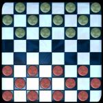

Welcome to the games section of Three Sharks Entertainment. Here you will find all of our official javascript games on display and directly playable from our website. This is provided to give you an idea of what we can make for you. The size shown is the total size of all files used by the game. Small size ensures quick loading on slow connections. If you figure something out or just want to give us an idea for out next game send an email to games@3sharks.com and we'll get back to you. Otherwise just look around and have fun. If you click on the title it takes you to the page for the game and instructions. Click on the picture and it directly launches from right here.
Welcome to the games section of Three Sharks Entertainment. Here you will find all of our official javascript games on display and directly playable from our website. This is provided to give you an idea of what we can make for you. The size shown is the total size of all files used by the game. Small size ensures quick loading on slow connections. If you figure something out or just want to give us an idea for out next game send an email to games@3sharks.com and we'll get back to you. Otherwise just look around and have fun. If you click on the title it takes you to the page for the game and instructions. Click on the picture and it directly launches from right here.
| Mancala

If there is only one game here you are familair with, this is it. This version of Chckers is written completly in DHTML using Javascript and HTML 4.0. It works best with IE 4.0+. The board and pieces are drawn using Cinema 4D 6.0 XL, and then cropped using Gimp. The selection boxes are completly drawn with Gimp. Perfect for a afernoon of tournaments on your website.
| Size: 73.2 Kb
This is one of those games where the rules seem simple, but mastering it take quite a while. It is based on an old African game played in the dirt. The graphics are made in the same way as Checkers, and the game engine has many of the same parts. Check it out if you're looking for a new kind of board game.
| Size: 64.0 Kb
| Hexwar
This is a javascript remake of an old arcade game. The object is to take over. It has an simple interface and is easy to learn, but many strategies can be used in this short game of Hexagon. It was also rendered with a 3D modeler and cropped with Gimp. The engine is very similair to that of checkers and mancala.
| Size: 89.9 Kb
| Size: Still Under Construction
|
-- Eclipse -- | ||||||||||
|
Adventures of Tim was our first attempt at javascript programming. We believe that it dosen't take c++ or even a java applet to make a quality game. This side scroller can be hours of fun, but it only has one level. When playing remember that all of this is just a web page with the same kind of javascript as the changing logos at the top. Just a little more added. Be prepared to be amazed at the level of features programmed into it's engine.
Size: 80.9 Kb | |
If you were blown away with AOT 1.0, then watch out for the sequel. It has improved graphics, more features, and the best part, multiple levels. It's more than a one page program now. It's an entire project. If you can find a more advanced jacascript game on the net, please tell us. We need to know our competition. And we mean javascript not an applet or shockwave. Have fun!
| Size: 84.2 Kb |